米と魚、そして酢が織りなす美学。
一貫に込められた、千年を超える日本の知恵と情熱。
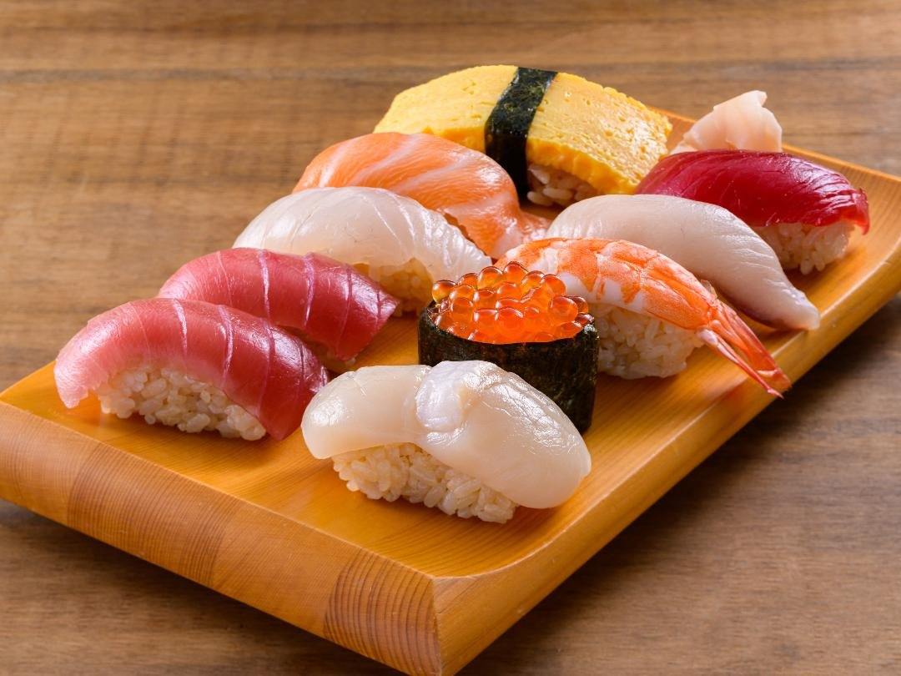
寿司(すし、鮨・鮓)とは、一般に酢飯などと主に魚介類を組み合わせた和食。特に握り寿司のこと。
The Ancient Origins of Preserved Fish
寿司の起源は、米と魚を発酵させた保存食「なれずし」にある。その歴史は遥か東南アジアの山地民族にまで遡るとされる。
米飯と魚介類を組み合わせた和食として世界に知られる寿司。元々は米飯と魚を発酵させた保存食であり、長期保存の手段として発達した。
日本での文献初見は、奈良時代の『養老令』(718年)。「鰒鮓(あわびずし)」「貽貝鮓(いがいずし)」などの記述が見られ、千年以上の歴史が確認できる。
「すっぱい」を意味する古語「酸(す)し」が、この食の名前の由来となった。
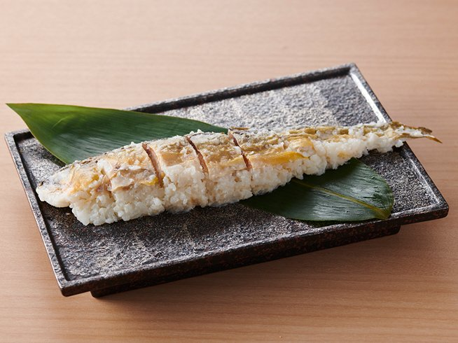
A Journey Through The Centuries
『養老令』に鮓が登場。鰒(アワビ)や貽貝(イガイ)の鮓が記録される、日本での文献初見。塩と飯で漬け込み乳酸発酵させる「なれずし」として存在していた。
『延喜式』に多数の鮓が記録。諸国からの貢納品として鮒や鮎などのなれずしが盛んに作られていた。『今昔物語集』には「鮨売りの女」の話も登場し、当時の暮らしが伺える。
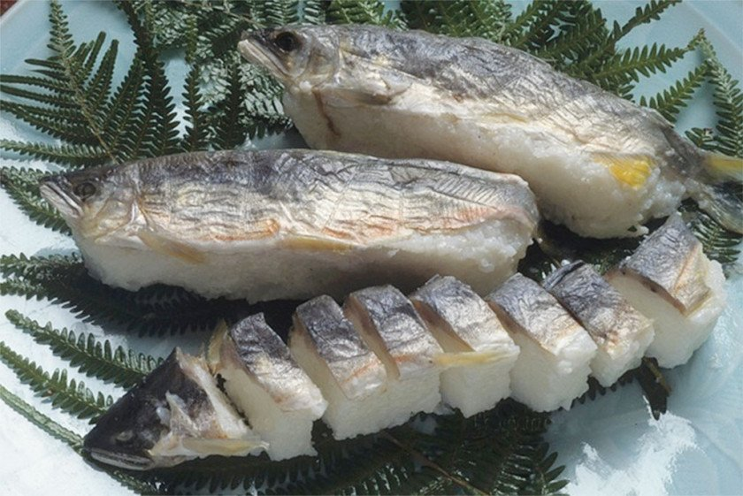
「ナマナレ(生成)」の登場。発酵期間を短縮し、漬け床の飯も共に食するスタイルが生まれる。蒸した強飯から柔らかい姫飯への食生活変化が背景にあった。
酢を用いた「早ずし」誕生。発酵を待たずに酢で酸味を調節する革命的な手法が生まれる。1728年の『料理網目調味抄』には「箱寿司に酢を注ぐ」との記述が登場。
握り寿司の誕生。華屋與兵衛や堺屋松五郎らによって創案されたとされる握り寿司。江戸っ子にもてはやされ、屋台でも盛んに売られた。江戸のみならず関西にまで「江戸鮓」の店が広がった。
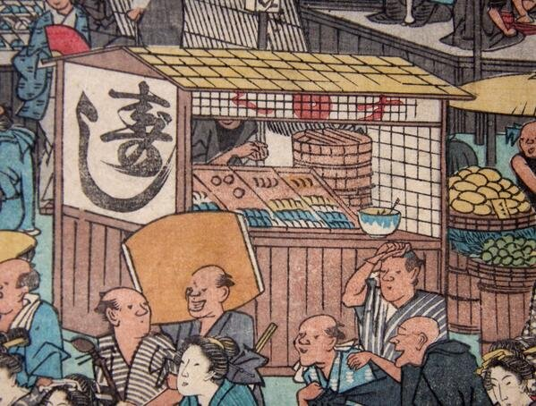
関東大震災を機に全国へ。震災により東京から寿司職人が離散し、江戸前寿司が日本全国へと広まった。明治以降の製氷・冷蔵技術の進歩も相まって、生魚を扱える環境が飛躍的に向上した。
回転寿司の誕生。大阪で「廻る元禄ずし」が開店。高級料理だった寿司を、気軽に楽しめる大衆の食へと変えた革命。1980年頃には日本全国に普及した。
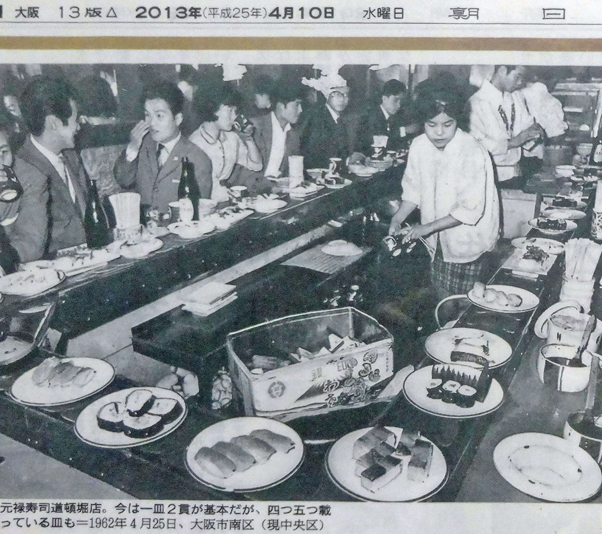
サーモン寿司の革命。ノルウェー政府のサーモン輸出計画により、日本にサーモン寿司が浸透。2023年の調査では12年連続で回転寿司人気ネタ第1位となった。
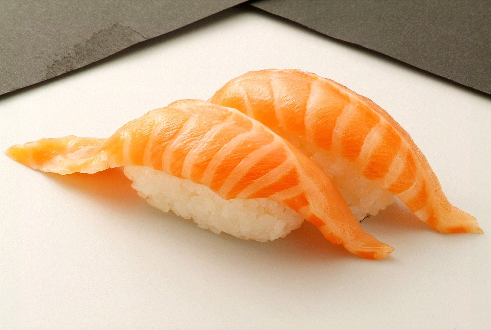
The Many Forms of Sushi
小さな酢飯の塊に寿司種を載せ、両手で握って馴染ませた寿司の王道。江戸時代に江戸で考案され、現代の寿司を象徴する存在。一つを「一貫」と数える。
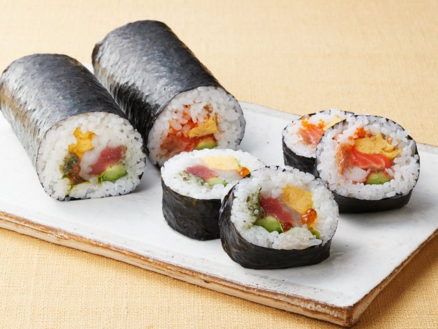
海苔と酢飯で具を巻いた寿司。細巻・中巻・太巻と太さで呼び名が変わる。軍艦巻は崩れやすい具材を乗せる独創的なスタイル。海外では"Roll"として無限の創作が。
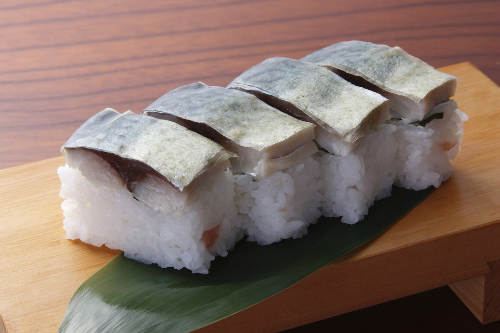
酢飯と具を木型に詰め、力をかけて押し固めた寿司。大阪の箱寿司、バッテラ、鱒寿司など、関西を中心に発達した伝統の形。握り寿司の原型ともいわれる。
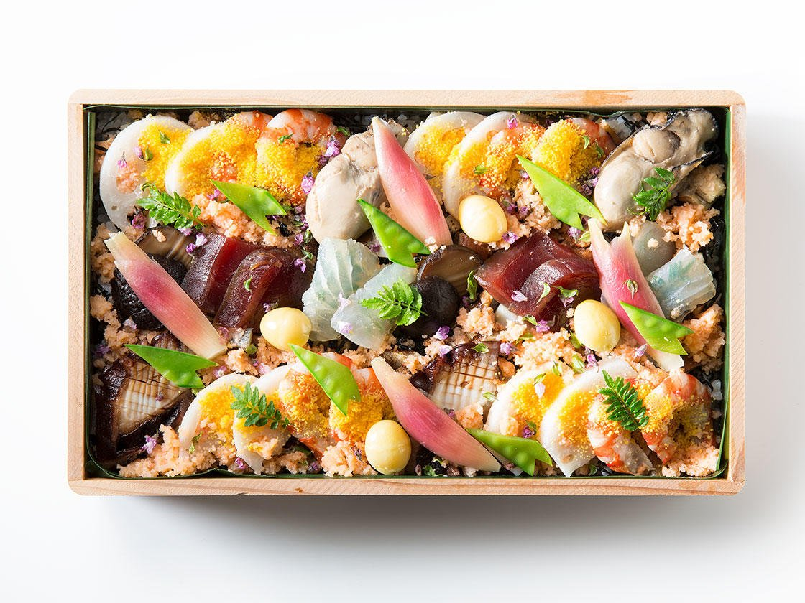
酢飯に各種の具材を散らしたもの。江戸前では白い酢飯の上に握り寿司の種を並べる。関西では五目寿司と呼ばれ、家庭でハレの日に作られる祝祭の一品。
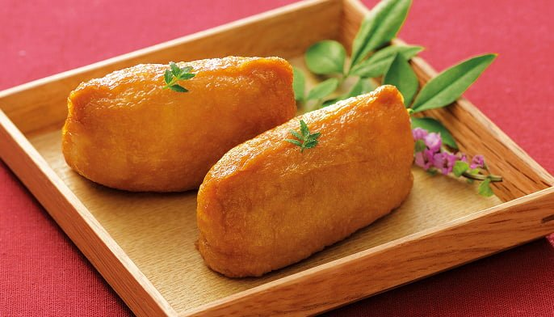
甘辛く煮た油揚げに酢飯を詰めた寿司。稲荷信仰の狐の好物に由来する名。東は四角、西は三角と地域で形が異なる。巻き寿司と詰め合わせれば「助六」に。
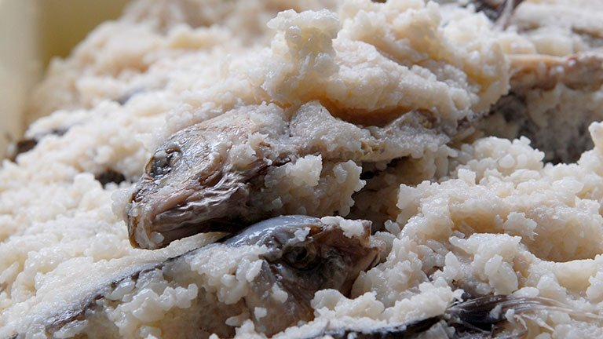
魚に塩と飯を混ぜ長期保存し乳酸発酵させた寿司の原型。滋賀の鮒寿司、和歌山の鮎寿司、秋田のハタハタ寿司など。強い匂いと深い旨みを持つ保存食の極み。
The Global Ascent of Sushi
Sushi は今や、天ぷらやすき焼きと並ぶ日本食を代表する食品となった。地方都市のスーパーマーケットですら、寿司のパックや巻物が売られている。
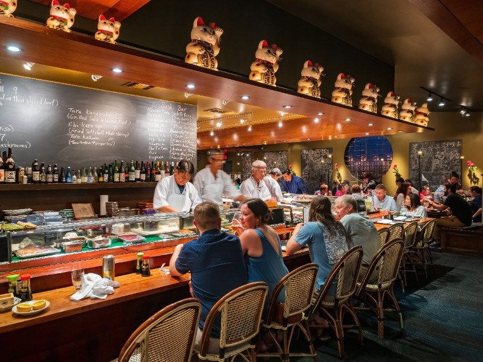
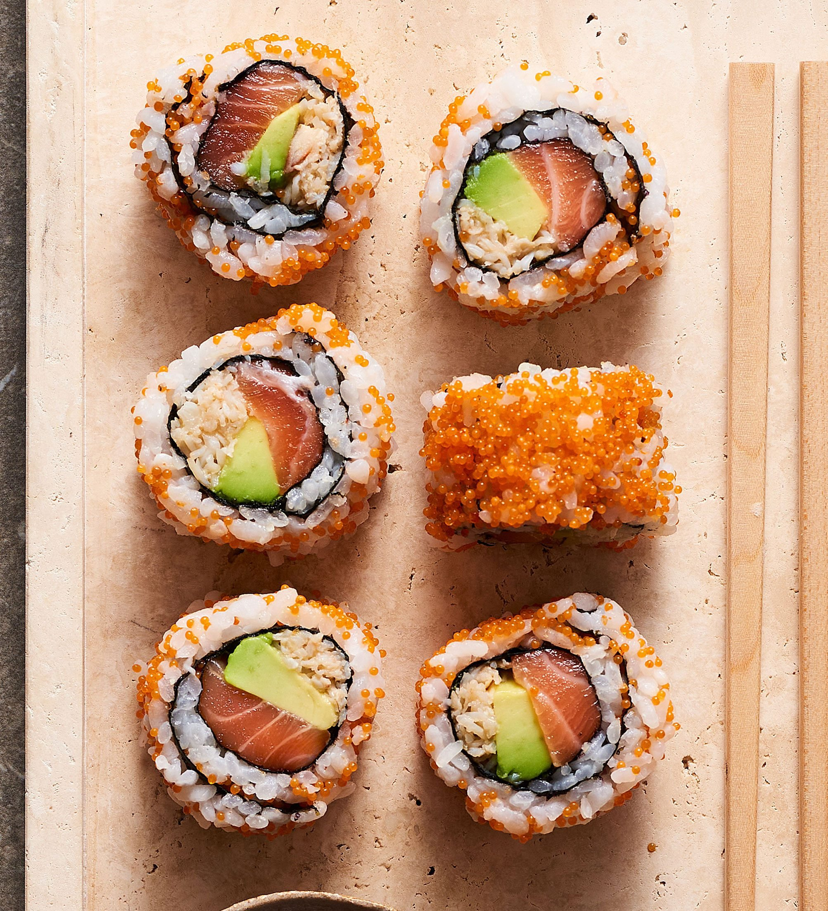
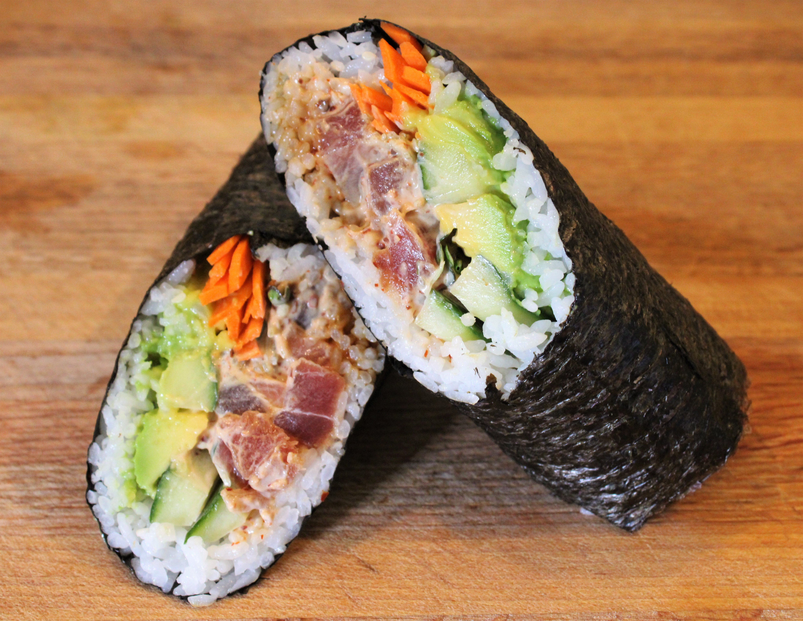
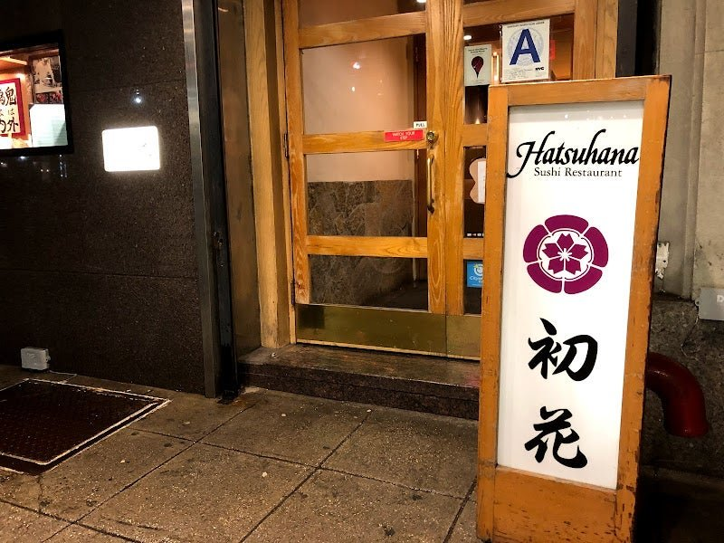
Regional Treasures of Japan
日本各地の風土と歴史が育んだ、土地ならではの寿司たち。山の幸、海の幸、そして発酵の知恵——その土地に根ざした素材と技法が、唯一無二の味わいを生み出してきた。
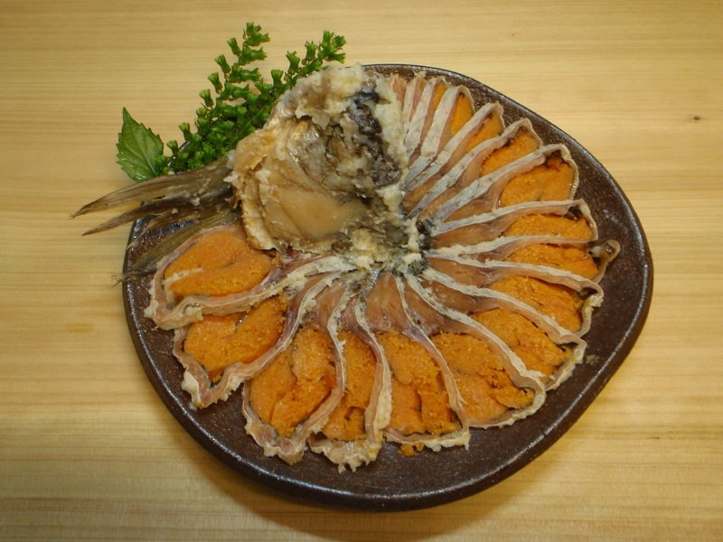
琵琶湖のニゴロブナを用いたなれずし。古くからの製法で寿司の原型と呼ばれる滋賀県の名産。数ヶ月以上の飯漬けで醸される、深遠な旨味と香り。
1893年、大阪順慶町で誕生。ポルトガル語のbateira(小舟)が語源。酢締めの鯖と白板昆布を重ねた押し寿司で、江戸前寿司の原型とされる。
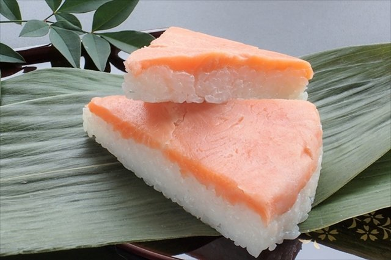
富山名産の桜色に染まる押し寿司。笹の葉の清々しい香りと、鱒の繊細な風味が調和する。木箱に美しく収められた芸術的な一品。
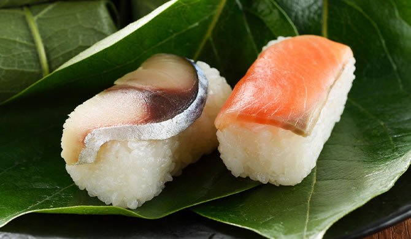
柿の葉で包んだ押し寿司。奈良県・和歌山県の郷土料理で、鯖・鮭・小鯛などが用いられる。葉の抗菌作用を活かした先人の知恵。
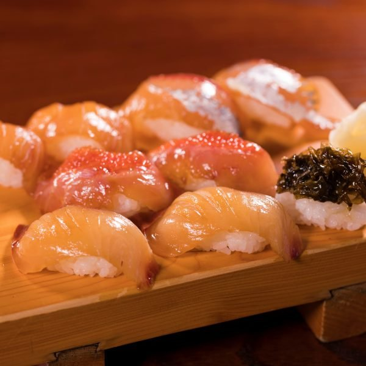
伊豆諸島・小笠原諸島の郷土料理。島で捕れる魚を醤油漬けにし、ワサビの代わりに唐辛子や洋がらしを使う、島ならではの独創的な握り寿司。
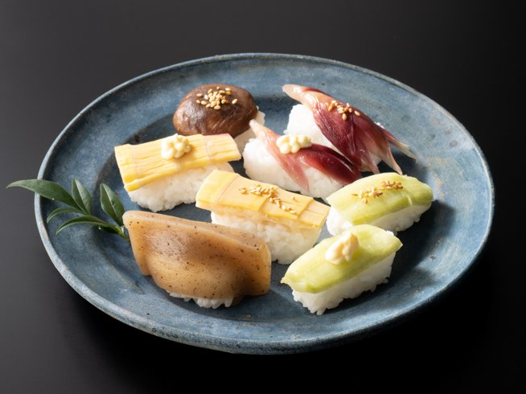
山間部に伝わる野菜と山菜の寿司。柚子酢の酢飯に筍・茗荷・椎茸などを載せる。2018年より「土佐寿司」としてヴィーガン向け輸出も展開中。